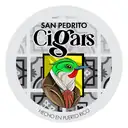

San Pedrito Cigars
Torcedor / marca artesanal · Humacao, Puerto Rico
San Pedrito Cigars aparece en La Hoja Boricua, la guía de cigarros de artesanos boricuas, con 2 cigarros en el catálogo.
Sus cigarros
- San Pedrito (línea artesanal) Vitolas: 5 x 32, 5 x 34, Lancero 7 x 38, Double Corona 6 x 44, Pirámide 6.5 x 54, Toro 6 x 48, Toro 6 x 50, Toro 6 x 60
- San Pedrito Barber Pole Vitolas: 6 x 56